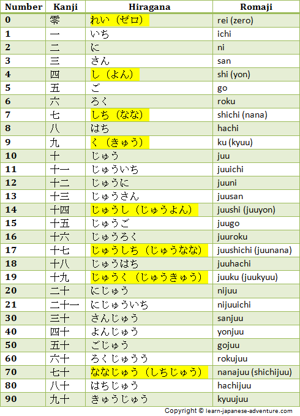
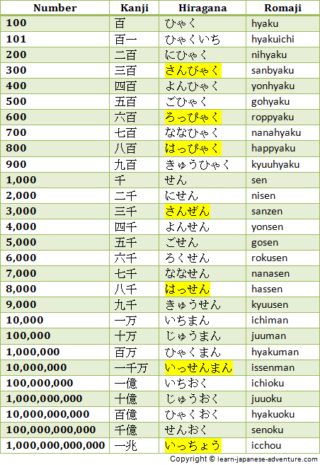

Learn how to count the
Amazing Japanese Numbers
"What! Why do I need to spend time learning Japanese numbers? Aren't they as simple as 1, 2, 3?".
Do you have the same feeling as me when I was first introduced to them? They may not be as straight forward as you think, in fact they may be confusing.
However, you will be surprised to learn that once you know them, they flow out naturally from your mouth.
Why do I say they may be confusing? Because you need to add a counter word after the number when counting objects.
Depending on the object you need to change the counter word accordingly. The Japanese counter word is like an indicator of what type of object you are counting.
For example, for flat and thin objects, the counter word is まい (mai). So you will say シャツにまい (sha tsu ni mai) for two shirts, and you will say かみさんまい (ka mi san mai) for three pieces of papers. For heavy equipment the counter word is だい (dai). Therefore you will say くるまごだい (ku ru ma go dai) for five cars.
There can be many other Japanese counter words that you need to know in order to count many other objects.
Moreover, depending on the counter words, the pronunciations of the certain numbers will have to be changed to sokuon. On the other hand, the pronunciations of the counter words will need to be changed to dakuon or handakuon for certain numbers. (Check out the hiragana chart for sokuon, dakuon and handakuon)
One more thing, certain numbers like four, seven and nine have two different pronunciations. For number four, most of the time you will say yon, but some situations you will need to say shi. Too bad they are not interchangeable, you need to remember which one to use in each situation.
For number seven, the two pronunciations are nana and shichi. For number nine, they are kyuu and ku. Not to forget about number zero. Sometimes you will use the onyomi rei, sometimes the katakana version zero is preferred.
There is one more way of counting numbers in Japanese which does not require the counter word. However, the pronunciations for one to ten for this group of numbers are totally different. You will get to see that later.
Confused? I know it looks complicated. Believe me, I was as confused as you do. But when you get the hang of it, it turns out to be quite natural.
Let's first get familiarize with the Japanese numbers and their pronunciations.
Tables for Japanese numbers

The table above shows the numbers from zero to ninety. Take note of the highlighted numbers where there are two different pronunciations.

The table above shows the numbers from one hundred to one trillion. Take note the different pronunciations required for the highlighted numbers.
There is one more point to note that the Japanese numbers are counted differently from English numbering system. Instead of ten thousand, you will have to say 万 (man) for 10,000.
Thereafter it is 十万 (juuman) for 100,000 (not hundred thousands), 百万 (hyakuman) for 1,000,000 (not one million). The unit used is 万 (man). This is the same as the Chinese numbering system.
Related Topics
See what different Japanese counter words are used when counting different objects using Japanese numbers. For examples, there are counters for big animals, small animals, books, shoes, money and many more.
Each day of the week has its own reading, and different days of the months can have special readings you need to take note. See how to give days of the week, days of the months, months of the year and relative time periods in Japanese.
Do you know how to give the time now using Japanese? Learn how to give Japanese time periods (hour, minute, second) correctly.
How to say the durations of 3 hours, 3 days, 3 weeks, 3 months and 3 years in Japanese? Learn how to give Japanese durations of time (hours, days, weeks, months, years).
There are two ways of reading age in Japanese. See how to differentiate them using onyomi and kunyomi readings with Japanese numbers.
Learn how to incorporate numbers in Japanese into normal sentences.
If you want to learn more about numbers in Japanese, I recommend you to get a Japanese electronic dictionary.
Like This Page?
| Share this page: | ||||

New! Comments
Have your say about what you just read! Leave me a comment in the box below.